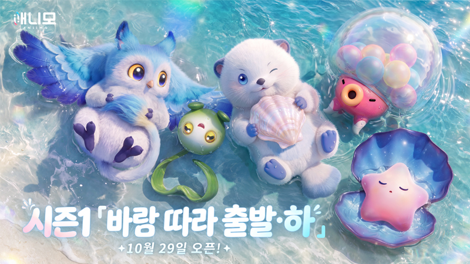
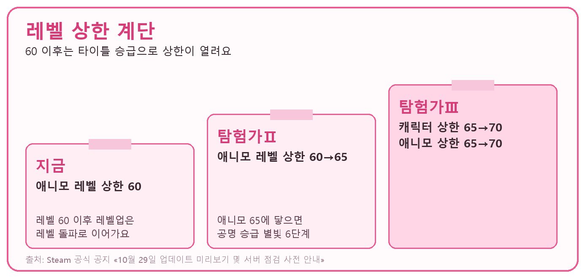

애니모 레벨 60 이후 육성, 돌파는 진화 아이템 카드는 잠재력용
애니모를 레벨 60까지 키워 둔 분들은 10월 29일 점검이 끝나면 '60 다음은 어떻게 하지' 하는 게 제일 궁금하실 텐데요. 시즌1 「바람 따라 출발·하」 업데이트 공지를 보면 60 이후로 가는 길이 열리는데, 공지 기준으로는 조건이 두 갈래로 읽혀요. 하나는 레벨 상한을 여는 「탐험가Ⅱ」 승급이고, 다른 하나는 진화 아이템을 쓰는 레벨 돌파예요. 돌파에는 주 원소 유형에 맞는 진화 아이템이 필요하고, 잠재력 초기화 카드는 잠재력 발현을 초기화할 때 쓰는 별개의 아이템이거든요. 점검은 10월 29일 아시아·태평양 서버(Apac) 기준 07:00~15:00(UTC+8)이고, 한국 시간으로 옮기면 08:00~16:00예요. 실제 시간은 달라질 수 있다고 공지에 적혀 있어요. 이 글은 공지 미리보기를 기준으로 정리해서, 적용된 뒤의 실제 화면과는 다를 수 있어요.

이미지: Steam 애니모 공식 공지 · 10월 29일 업데이트 미리보기 및 서버 점검 사전 안내
시즌1 「바람 따라 출발·하」 오픈을 알리는 공지 헤더예요.
레벨 60을 넘기려면 뭐가 필요한가요?
공지 기준으로 이렇게 읽혀요. 애니모 레벨 상한은 「탐험가Ⅱ」로 승급하기 전까지 60이고, 60에 도달한 뒤 계속 레벨업하려면 레벨 돌파를 진행해야 해요. 이때 그 애니모의 주 원소 유형에 맞는 진화 아이템을 소모해요. 그래서 60을 넘기려면 탐험가Ⅱ 승급으로 상한을 열고, 진화 아이템으로 돌파하는 두 가지가 같이 걸려 있어요.
같은 애니모라도 원소가 다르면 필요한 진화 아이템도 달라지니까, 내 애니모가 어떤 원소로 분류되는지부터 알아 두시면 좋아요. 공지에서 진화 아이템 이름이 직접 나온 건 일루윙의 「일루 소울」 하나뿐이고, 동행 수첩 프리미엄 보상으로 소개돼요. 돌파와 초기화 카드를 나란히 놓으면 이렇게 갈려요.
| 구분 | 진화 아이템 | 잠재력 초기화 카드 |
|---|---|---|
| 쓰이는 곳 | 레벨 60 이후 레벨 돌파 | 레벨 60 초과 애니모의 잠재력 발현 초기화 |
| 공지 원문 | «주 원소 유형에 맞는 진화 아이템을 소모» | «신규 아이템 「잠재력 초기화 카드」를 소모» |
| 돌파 필수 재료 | 맞아요 | 공지에 그런 문장이 없어요 |
60 이후 레벨업에 필요한 돌파 화면이 들어갈 자리예요.
저는 레벨 60 애니모 중에 〔일루윙 / 가장 아끼는 애니모 / 아직 60을 못 찍은 애니모〕 쪽부터 돌파를 챙겨 보려고 해요.
잠재력 초기화 카드는 어디에 쓰나요?
잠재력 초기화 카드는 애니모 레벨이 60을 넘었을 때 「잠재력 발현」을 초기화하려고 소모하는 신규 아이템이에요.
공지에서 이 카드가 나오는 문장은 잠재력 발현 초기화 한 군데뿐이고, 돌파 재료로 쓴다는 문장은 없어요. 돌파·초기화 카드 관련 수량·획득처는 공지에 한 줄도 나오지 않고, 돌파와 승급 중 무엇이 먼저인지도 적혀 있지 않아서 정해진 값은 말씀드릴 수가 없어요. 그래서 60을 넘기려고 카드부터 모아 두실 필요는 없어 보여요. 카드는 잠재력 발현을 다시 짜고 싶을 때만 따로 챙기는 아이템이에요.
잠재력 초기화 화면이 들어갈 자리예요.
레벨 돌파 1회에 드는 수량, 원소별 진화 아이템 이름, 잠재력 초기화 카드 획득처는 화면에서 확인되는 대로 채워 둘게요.
확인 위치: 점검 종료 후 애니모·아이템 화면과 인게임 공지 · 확인되면 아래에 채워주세요.
| 항목 | 값(확인 후 입력) |
|---|---|
| 레벨 돌파 1회에 드는 수량·횟수 | — |
| 돌파 화면 위치 | — |
| 주 원소 유형별 진화 아이템 이름·획득처 | — |
| 잠재력 초기화 카드 획득처·초기화 범위 | — |
| 탐험가Ⅱ 승급과 레벨 돌파 중 무엇이 먼저인지 | — |
| 65·70 구간에서 같은 돌파가 또 필요한지 | — |
| 탐험가Ⅱ·Ⅲ 승급 심사와 배지 도전 내용 | — |
레벨 상한은 65, 70까지 어떻게 열리나요?
애니모 레벨 상한은 캐릭터 타이틀이 「탐험가Ⅱ」로 오르면 60에서 65로, 「탐험가Ⅲ」로 오르면 65에서 70으로 열려요. 그러니까 60을 넘겨 65까지는 탐험가Ⅱ, 65를 넘기려면 탐험가Ⅲ가 필요해요. 앞에서 본 돌파와 함께 읽으면, 60 너머는 상한을 여는 승급과 진화 아이템 돌파가 같이 걸려 있다고 보는 게 공지에 맞아요.

도해: 공지 수치 기준 · 데이터 출처 Steam 애니모 공식 공지
탐험가Ⅲ에서는 캐릭터 레벨 상한도 65에서 70으로 같이 올라가요.
타이틀 도전은 이런 경로로 열려요.
- 레비 멘토가 레벨 60 이상 모험가에게 연락해서 탐험가Ⅱ·Ⅲ 승급 심사와 배지 도전을 열어 줘요
- 「특훈 플랜」에는 새로운 「파도의 장」이 열려요. 파도의 장 도전 조건은 캐릭터 타이틀 「탐험가Ⅰ」 달성과 「웨이브 군도」 스토리 퀘스트 진행이에요
타이틀이 승급하면 캐릭터와 애니모의 새로운 성장 단계도 함께 열린다고 공지에 적혀 있어요. 애니모가 레벨 65에 도달하면 「공명 승급」으로 「별빛 6단계」 돌파에도 도전할 수 있어요. 공명 쪽 재료 이야기는 같은 블로그의 「애니모 공명 단계 육성, 만상의 결정 몇 개 있어야 다음 단계 가나」 글에 따로 정리해 뒀어요.
특훈 플랜의 「파도의 장」 화면이 들어갈 자리예요.
점검 끝나고 뭐부터 하면 될까요?
점검이 끝나면 레벨 60에 닿은 애니모의 원소부터 확인하고, 탐험가Ⅱ 승급 여부와 진화 아이템이 있는지 따지는 순서가 제일 깔끔해요.
내 상황별로 이렇게 갈려요
- 60에 닿았고 진화 아이템도 있다면 레벨 돌파를 진행해요. 다만 상한은 탐험가Ⅱ 승급 전까지 60이라서, 60을 넘기려면 승급도 같이 챙겨요.
- 60에 닿았는데 진화 아이템이 없다면 주 원소 유형에 맞는 아이템부터 찾아요. 공지에는 카드가 돌파 재료라는 문장이 없어요.
- 잠재력 발현을 다시 짜고 싶다면 레벨이 60을 넘은 뒤에 카드를 써요. 초기화에는 60 초과 조건이 붙어 있어요.
- 60을 넘겨 65까지 키우려면 「탐험가Ⅱ」, 65를 넘기려면 「탐험가Ⅲ」 승급이 필요해요. 상한이 캐릭터 타이틀에 묶여 있어서예요.
점검 직후 열어 볼 것
- 진화 아이템에 붙은 원소가 내 애니모의 원소와 맞는지 확인해요.
- 탐험가Ⅱ 승급과 돌파를 마친 뒤 레벨 60 너머로 레벨업이 이어지는지 보세요. 둘 중 무엇이 먼저인지도 같이 확인하면 좋아요.
- 레벨 65에 닿았을 때 돌파 단계가 한 번 더 나오는지가 관건이에요. 65와 70 구간은 직접 열어 봐야 알 수 있어요.
애니모 육성 자주 묻는 질문
Q. 잠재력 초기화 카드로 레벨 돌파를 할 수 있나요?
아니요, 돌파 쪽은 원소별 진화 아이템이 맡아요. 카드는 잠재력 발현을 처음 상태로 돌리는 용도예요.
Q. 레벨 60을 넘기려면 탐험가Ⅱ만 열면 되나요?
탐험가Ⅱ로 상한이 60에서 65로 열리지만, 60에 도달한 뒤 계속 레벨업하려면 돌파도 따로 진행해야 해요. 승급만으로 끝난다고 보지 말고 둘을 같이 챙겨 주세요. 먼저 해야 할 쪽은 점검 뒤 화면에서 확인해 볼게요.
Q. 레벨을 올리면 잠재력 발현 횟수도 늘어나나요?
네, 공지 기준으로는 애니모 레벨을 높이거나 「공명 승급」 돌파를 진행하면 잠재력 발현 횟수가 늘어나요. 횟수를 늘리는 건 레벨과 공명 승급이고, 발현을 되돌리는 건 카드라서 역할이 달라요.
같이 알아 둘 변경
같은 공지에 점검 보상으로 「휘석」 500개가 적혀 있고, S2 시즌 버전 업데이트 전에 가입한 분이 대상이에요. 「강자의 인장」은 지역 구분 없이 하나로 합쳐져 장착 아이템 재계약에 소모돼요. 시즌 태그 애니모는 어느 지역의 「수정 이슬」이든 공명 승급에 쓸 수 있고, 웨이브 군도 애니모용으로 「웨이브 군도의 수정 이슬」이 새로 추가됐어요.
애니모 레벨 60 이후 육성 정리
저라면 10월 29일엔 진화 아이템과 탐험가Ⅱ 승급 쪽을 먼저 챙기고, 카드는 잠재력을 다시 짤 일이 생겼을 때 모아도 늦지 않다고 봐요~ 레벨 구간별 순서는 「애니모 육성 뭐부터 해야 하나, 잠재력 진화 공명 순서 레벨 구간별 정리」 글에서 같이 보실 수 있어요. 수량과 획득처가 화면에서 나오는 대로 이 글에 채워 둘게요.
✔ 애니모 같이 보기 좋은 내용
· 애니모 천휘 일루윙 팬텀배트 얻는 법, 동행 수첩·시즌 업적
· 애니모 달빛이슬 무 보름달 고추 변이 확률 증가, 홈 시즌 UP 단계 보름달 포인트 정리
· 애니모 신비한 천휘 알 얻는 법, 홈 15레벨 18레벨 캠핑카 레벨업 조건 정리